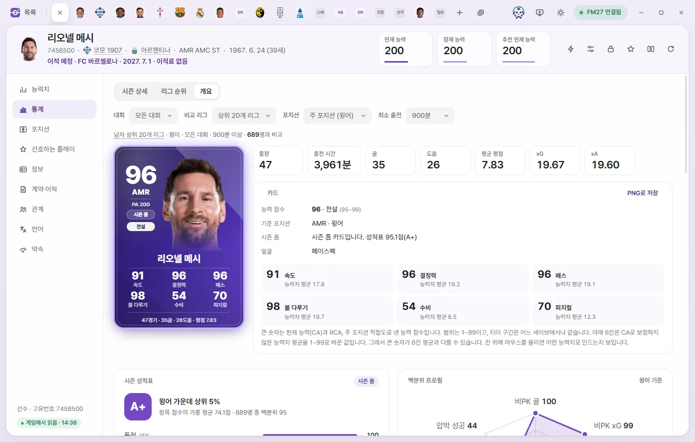
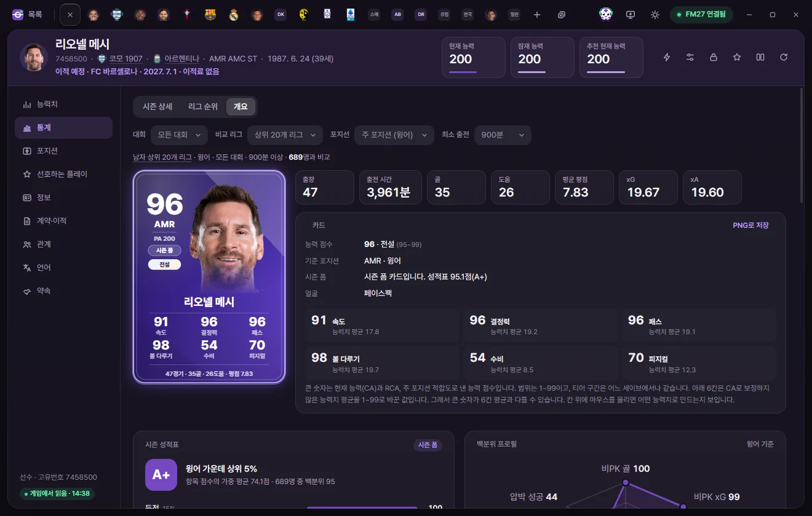
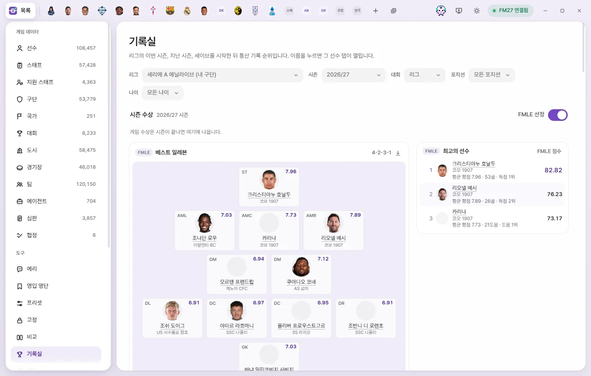

도구
통계·선수 카드·기록실
선수 탭의 통계 페이지, FMLE 선수 카드와 PNG 저장, 구단 탭의 구단 기록, 리그 기록 순위를 모은 기록실을 설명합니다. 모두 게임 값을 읽기만 합니다.
이 페이지의 화면은 모두 게임을 읽기만 합니다. 여기서 바꾸는 값은 없습니다. 예외는 선수 카드의 사진 고르기와 '게임에도 넣기'뿐입니다.
선수 통계 페이지
선수 탭 왼쪽의 통계를 누릅니다. 위에 세 탭이 있습니다: 시즌 상세, 리그 순위, 개요. 마지막으로 본 탭을 다음 선수에서도 엽니다.

시즌 상세
이번 시즌 기록을 대회별 열로 보여 줍니다. 그 선수가 뛴 대회만 열이 생깁니다.
| 열 | 뜻 |
|---|---|
| 모든 대회 | 리그, 컵, 대륙 대회, 국가대표를 더한 값 |
| 리그 / 컵 / 대륙 대회 / 국가대표 / 친선 | 그 대회의 기록 |
| 구단 전체 | 게임이 따로 세는 구단 기록 합계 |
- 합계 / 90분당: 90분당을 고르면 횟수를 그 대회 출전 시간으로 나눠 90분당 값으로 보여 줍니다. 비율, 평점, 출전 시간은 그대로입니다.
- 줄은 경기, 득점, 기회 창출, 패스, 수비, 활동량, 실수·징계 묶음입니다. 골키퍼면 골키퍼 묶음(실점, 무실점, 막아 낸 xG)이 더해집니다.
- 오른쪽 위에 통산 경기·골과 리그 경기·골이 보입니다.
시즌별 이력: 아래에 게임의 이력 화면과 같은 줄이 시즌마다 나옵니다. 출장·골·도움·MVP·평점은 리그 기록입니다. 줄을 누르면 그 시즌의 대회별 기록이 펼쳐집니다. '이적' 칸은 그 구단에 올 때의 방식(이적료, 임대, 자유 이적)입니다.
이력은 게임의 이력 화면에서 직접 받아 옵니다. FMLE를 읽기 전용으로 켰거나 게임이 관리자 권한으로 실행 중이면 '이력을 불러오지 못했습니다'가 뜹니다.
수상: 게임이 준 시즌 상이 최신부터 보입니다. 게임이 2·3위까지 정하는 상은 그 순위도 보여 줍니다. 12개가 넘으면 모두 보기를 누릅니다. 올해의 팀은 세이브를 시작한 뒤의 것만 있습니다.
비교 설정
리그 순위와 개요는 같은 포지션 선수들과 비교합니다. 위 줄에서 비교할 집단을 정합니다. 이 설정은 모든 선수에 같이 적용됩니다.
| 칸 | 선택지 |
|---|---|
| 대회 | 모든 대회, 리그, 컵, 대륙 대회, 국가대표, 구단 전체, 친선 |
| 비교 리그 | 상위 20개 리그, 같은 리그만, 전체 리그 (남녀는 선수에 맞춰 나뉩니다) |
| 포지션 | 주 포지션(자동) 또는 골키퍼, 중앙 수비, 측면 수비, 수비형·중앙 미드, 윙어, 공격형 미드, 스트라이커 |
| 최소 출전 | 제한 없음, 450분 ~ 2,700분 (처음 값 900분) |
표 위에 '… · n명과 비교'처럼 지금 비교 집단이 요약됩니다. 출전 시간이 최소 출전보다 적거나 기록이 부족하면 그 이유와 함께 등급을 매기지 않습니다.
리그 순위
지표마다 값, 백분위, 순위를 보여 줍니다.
- 값: 횟수는 90분당 값, 비율은 그대로입니다. 비율에는 몇 번 시도했는지가 붙습니다.
- 백분위: 같은 비교 집단 안에서 그 선수보다 낮은 선수의 비율입니다. 같은 값은 반만 셉니다.
- 적을수록 좋음: 실수, 소유권 상실, 파울, 경고·퇴장, 오프사이드, 실점은 백분위가 높으면 덜 한 것입니다.
- 지난 시즌 열: 게임에 지난 시즌 같은 대회 기록이 있으면 옆에 지난 값과 화살표가 붙습니다. 초록은 나아진 것, 빨강은 나빠진 것입니다.
줄을 누르면 비교 선수 전체의 분포 막대와 1~10위, 그 선수 근처 순위가 펼쳐집니다. 전체 순위 보기 →를 누르면 같은 조건에 가깝게 기록실을 엽니다.
개요
맨 위에 선수 카드와 이번 시즌 요약 칸(출장, 출전 시간, 골, 도움, 평균 평점, xG·xA 또는 무실점·막아 낸 xG), 카드 정보가 있습니다. 그 아래 차례로:
| 칸 | 내용 |
|---|---|
| 시즌 성적표 | 등급과 '같은 포지션 가운데 상위 n%'. 등급은 비교 집단 안 백분위로 정합니다: 90 이상 A+, 80 이상 A, 65 이상 B, 45 이상 C, 25 이상 D, 그 아래 F. 항목(득점, 기회 창출, 압박 등)별 점수와 비중이 보이고, 항목을 누르면 그 항목의 통계와 백분위가 펼쳐집니다. 시도가 적은 비율은 50 쪽으로 당겨 계산합니다 |
| 백분위 프로필 | 포지션에 맞는 지표 6~8개를 거미줄 그림으로 |
| 두 패널 | 골 결정력·기회 창출(골키퍼는 골문·빌드업) 지표의 분포와 백분위 |
| 두 지표 비교 | 비교 선수를 점으로 찍은 그림. 가로, 세로로 지표를 고르고 가로·세로 바꾸기를 누릅니다. 점에 마우스를 올리면 선수가 보이고, 누르면 그 선수 탭이 열립니다. 옆에 두 지표가 가장 비슷한 선수 6명이 나옵니다 |
| 최근 시즌 | 이번 시즌과 지난 3시즌의 구단, 출장, 골, 도움, 평점, 능력 점수, 성적표 |
| 시즌별 추이 | 능력 점수, 평균 평점, 골, 도움, xG 중 하나를 시즌별 선으로. 속이 빈 점은 진행 중인 이번 시즌입니다 |
| 선 자리 | 경기장 그림에 자리별 출전 수를 색으로. 시즌과 구단·국가대표를 고를 수 있습니다 |
지난 시즌의 능력 점수와 성적표는 FMLE가 그 시즌 동안 남긴 기록에서 옵니다. 설정의 시즌 끝 기록 남기기가 켜져 있어야 하고, FMLE를 켜 두지 않은 시즌은 '기록 없음'입니다. 세이브를 시작하기 전 시즌은 게임에 출장과 골만 있습니다.



선수 카드
FMLE가 만드는 선수 카드입니다. 통계 › 개요, 비교 화면, 구단 탭 선수단의 카드 보기, 구단 기록의 베스트 일레븐에 나옵니다.
- 큰 숫자(능력 점수): 현재 능력(CA)과 RCA(추천 현재 능력), 주 포지션 적합도로 낸 1~99 점수입니다. 아래에 포지션과 PA가 있습니다.
- 티어: 능력 점수 구간으로 정합니다. 어느 세이브에서나 같습니다.
| 티어 | 능력 점수 |
|---|---|
| 전설 | 95~99 |
| S | 88~94 |
| A | 78~87 |
| B | 65~77 |
| C | 50~64 |
| D | 1~49 |
- 아래 6칸: CA로 보정하지 않은 능력치 평균을 1~99로 바꾼 값입니다(필드 선수는 속도·결정력·패스 등, 골키퍼는 반응·핸들링 등). 그래서 큰 숫자와 6칸 평균이 다를 수 있습니다. 통계 › 개요의 카드 정보에서 칸에 마우스를 올리면 어떤 능력치로 만드는지 보입니다.
- 시즌 폼 카드: 이번 시즌 성적표가 80점 이상이면 보라색 '시즌 폼' 카드가 됩니다.
- 맨 아래 줄은 이번 시즌 경기·골·도움·평점(골키퍼는 무실점, 막아 낸 xG)입니다.
- 전설 카드는 마우스를 올리면 기울고 빛이 따라 움직입니다.
PNG로 저장
- 카드 한 장: 통계 › 개요의 카드 정보 머리에서 PNG로 저장을 누릅니다. 다운로드 폴더에
fmle-card-고유번호.png로 저장되고, 알림의 폴더에서 보기로 열 수 있습니다. - 선수단 전체: 구단 탭 선수단 표에서 카드로 보기를 누르면 선수단이 카드로 바뀝니다. 티어순 / 포지션순으로 정렬하고 PNG로 저장을 누르면 한 장의 그림으로 저장합니다. 목록으로 보기로 표로 돌아갑니다.
얼굴 사진
카드 정보의 '얼굴' 줄에 지금 얼굴이 어디서 오는지 보입니다.
| 얼굴 | 뜻 |
|---|---|
| 페이스팩 | 그래픽 팩에 이 선수 얼굴이 있습니다 |
| FMLE에서 고른 사진 | 내가 고른 사진입니다. 사진 바꾸기, 사진 빼기가 있습니다 |
| 없음 · 실루엣 | 포지션 색의 실루엣과 등번호가 나옵니다. 사진 고르기로 사진을 넣을 수 있습니다 |
사진 고르기는 8MB 아래의 PNG나 JPG를 받습니다. 고른 사진은 FMLE 화면에서만 보입니다.
게임에도 넣기: 고른 사진이 있을 때만 이 스위치가 보입니다. 켜면 그 사진을 게임 graphics 폴더 안의 FMLE 폴더에 넣습니다. 깔려 있는 페이스팩은 건드리지 않습니다. 게임에서 스킨을 다시 불러오면 선수 얼굴로 보입니다. 끄거나 사진 빼기를 누르면 게임 폴더에서도 뺍니다.
구단 기록
구단 탭 왼쪽의 기록을 누릅니다. FMLE가 이 구단 1군의 리그·컵·대륙 대회 기록으로 베스트 일레븐과 최고의 선수를 고릅니다.

- 시즌: 시즌마다(그 시즌의 리그 이름과 함께), 또는 세이브 시작 뒤 통산을 고릅니다.
- 베스트 일레븐: 카드로 채운 경기장입니다. 카드는 그 시즌 끝에 FMLE가 남긴 카드이고, 없으면 지금 카드를 씁니다. 교체 선수는 아래 줄에 나옵니다.
- 통산이면 레전드 XI(구단에서 쌓은 기여로)와 최고 시즌 XI(선수마다 이 구단에서 가장 좋았던 한 시즌으로)를 고릅니다.
- 최고의 선수: FMLE 점수 순 1~3위와 그 이유입니다.
- 아래 카드들은 득점, 도움 같은 부문별 순위입니다.
- 경기장 머리의 다운로드 단추는 그 일레븐을 PNG로 다운로드 폴더에 저장합니다.
고르는 규칙: 한 시즌은 그 시즌 팀 경기 시간의 3분의 1 이상 뛴 선수만, 통산은 시즌마다 그만큼 뛴 선수만 넣습니다. 포메이션은 이 팀이 실제로 뛴 자리(선수들의 자리별 출전)로 정합니다. 그 자리를 채울 선수가 모자라면 61가지 포메이션 중 점수 합이 가장 큰 것을 씁니다. 자리별 출전 기록이 없는 시즌은 '자리 기록 없음'이 붙고 선수를 주 포지션에 놓습니다. 세이브를 시작한 뒤의 시즌만 있습니다.
'이 구단의 기록이 아직 없습니다'가 보이면 세이브를 시작한 뒤 1군이 리그 경기를 치를 때까지 기다리세요.
기록실
왼쪽 도구의 기록실은 리그의 기록 순위입니다. 이름을 누르면 그 선수 탭이 열립니다.


고르는 칸
| 칸 | 선택지 |
|---|---|
| 리그 | 남자 상위 20개 리그, 여자 상위 20개 리그, 모든 리그, 또는 리그 하나(내 구단 리그에 '(내 구단)' 표시) |
| 시즌 | 이번 시즌, 지난 시즌들, 세이브 시작 뒤 통산 |
| 대회 | 리그, 모든 대회, 컵, 대륙 대회, 국가대표 |
| 포지션 | 모든 포지션, 공격수, 미드필더, 수비수, 골키퍼 |
| 나이 | 모든 나이, U21, U23 |
시즌 수상
- 게임이 준 시즌 상과 올해의 팀이 나옵니다. 시즌이 끝나야 생깁니다.
- FMLE 선정 스위치를 켜면 FMLE가 고른 최고의 선수와 베스트 일레븐이 함께 나옵니다. 평균 평점과 같은 포지션 선수들과 견준 기록(통계 페이지의 성적표 점수)을 출전 시간과 함께 본 점수로 고르고, 팀 경기 시간의 3분의 1 이상 뛴 선수만 넣습니다. 베스트 일레븐은 61가지 포메이션 중 점수 합이 가장 큰 것을 씁니다. 진행 중인 시즌은 지금까지의 기록으로 고릅니다.
부문별 카드와 순위표
- 득점, 도움, 공격포인트, 기회 창출, 평균 평점, 출장, 무실점 카드에 상위 선수가 나옵니다. 카드 제목을 누르면 아래 순위표가 그 지표로 바뀝니다.
- 순위표는 지표를 고르고 합계 / 90분당을 바꿀 수 있습니다. 열은 순위, 선수, 구단, 값, 출장, 시간, 나이입니다. 처음엔 100위까지 보이고, 아래 단추로 100명씩 500위까지 더 봅니다.
- 최소 출전: 90분당·평균·비율 순위의 기본은 한 시즌이면 그 팀이 치른 경기 시간의 3분의 1, 통산이면 2,700분입니다. 직접 고를 수도 있습니다.
- 시즌 중에 구단을 옮긴 선수는 구단마다의 기록을 더하고 가장 오래 뛴 구단을 보여 줍니다('외 n').
- 흐린 이름은 지금 게임에 없는 선수(은퇴 등)입니다. 이 선수의 기록은 FMLE가 남긴 시즌 기록에서 옵니다.
- 카드와 경기장 머리의 다운로드 단추로 PNG를 저장합니다.
이번 시즌은 게임의 지금 기록에서, 지난 시즌은 게임이 남긴 이력 파일에서 읽습니다. 세이브를 시작한 뒤의 시즌만 있습니다. 이력 파일을 읽지 못하면 지난 시즌 기록이 빠졌다고 알려 줍니다.